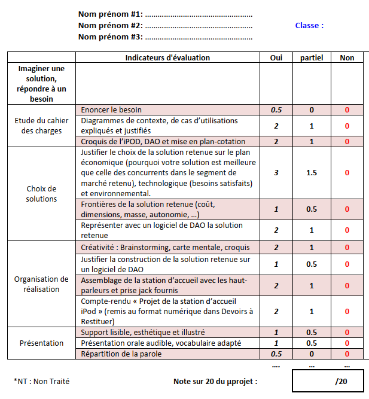

Accueil · Évaluation
Évaluation
Ce qui compte pour la note.
Treize indicateurs, trois niveaux : oui, partiel, non. Faites votre autoévaluation et regardez la note sur 20 se construire.
Barème original
Le barème tel qu'il figure dans le document original.

images/bareme-original.pngPage du barème de notation